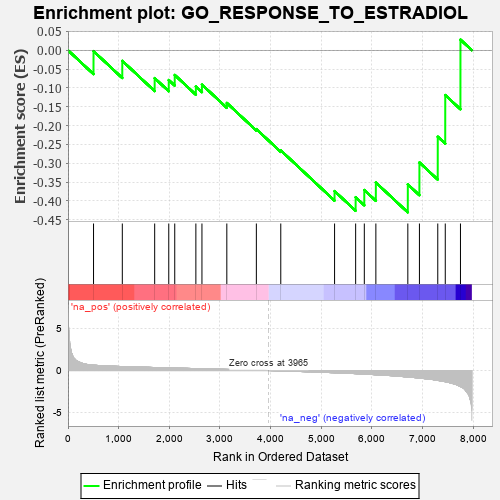
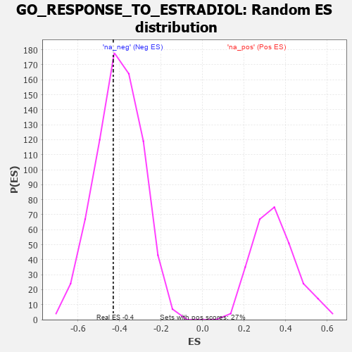

| | | Dataset | 7d |
| Phenotype | NoPhenotypeAvailable |
| Upregulated in class | na_neg |
| GeneSet | GO_RESPONSE_TO_ESTRADIOL |
| Enrichment Score (ES) | -0.43037745 |
| Normalized Enrichment Score (NES) | -1.0650123 |
| Nominal p-value | 0.40495867 |
| FDR q-value | 0.7935697 |
| FWER p-Value | 1.0 |
Table: GSEA Results Summary

Fig 1: Enrichment plot: GO_RESPONSE_TO_ESTRADIOL
Profile of the Running ES Score & Positions of GeneSet Members on the Rank Ordered List
| PROBE | GENE SYMBOL | GENE_TITLE | RANK IN GENE LIST | RANK METRIC SCORE | RUNNING ES | CORE ENRICHMENT | | 1 | MYOD1 | | | 504 | 0.628 | -0.0024 | No |
| 2 | AIFM1 | | | 1072 | 0.469 | -0.0282 | No |
| 3 | DDX18 | | | 1711 | 0.355 | -0.0740 | No |
| 4 | GPX4 | | | 1989 | 0.306 | -0.0791 | No |
| 5 | BMP7 | | | 2107 | 0.290 | -0.0656 | No |
| 6 | MBD3 | | | 2524 | 0.223 | -0.0963 | No |
| 7 | KAT5 | | | 2644 | 0.206 | -0.0912 | No |
| 8 | OGG1 | | | 3135 | 0.132 | -0.1400 | No |
| 9 | HSF1 | | | 3718 | 0.039 | -0.2094 | No |
| 10 | GGT7 | | | 4200 | -0.041 | -0.2659 | No |
| 11 | PTEN | | | 5262 | -0.261 | -0.3739 | No |
| 12 | CASP8 | | | 5678 | -0.369 | -0.3902 | Yes |
| 13 | STRN3 | | | 5849 | -0.417 | -0.3710 | Yes |
| 14 | CALR | | | 6077 | -0.499 | -0.3512 | Yes |
| 15 | EGFR | | | 6708 | -0.765 | -0.3561 | Yes |
| 16 | GHSR | | | 6937 | -0.894 | -0.2979 | Yes |
| 17 | MSX2 | | | 7299 | -1.171 | -0.2296 | Yes |
| 18 | GGT1 | | | 7447 | -1.329 | -0.1190 | Yes |
| 19 | CASP3 | | | 7747 | -1.902 | 0.0282 | Yes |
Table: GSEA details [plain text format]

Fig 2: GO_RESPONSE_TO_ESTRADIOL: Random ES distribution
Gene set null distribution of ES for GO_RESPONSE_TO_ESTRADIOL